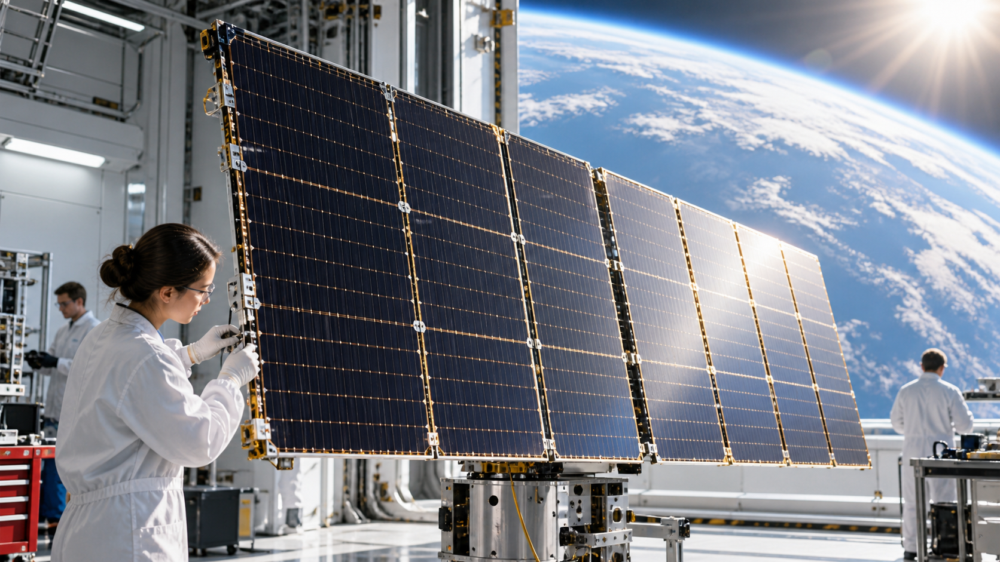
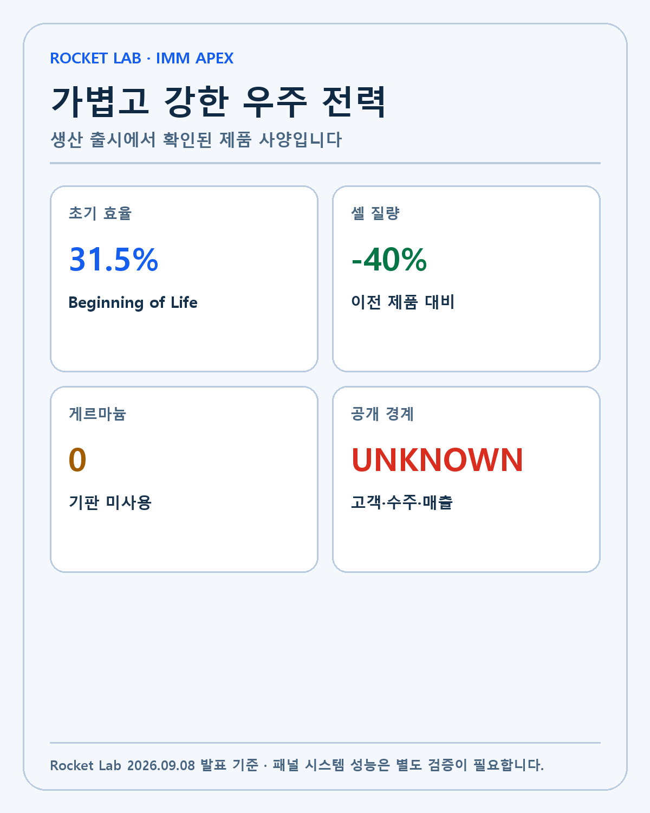
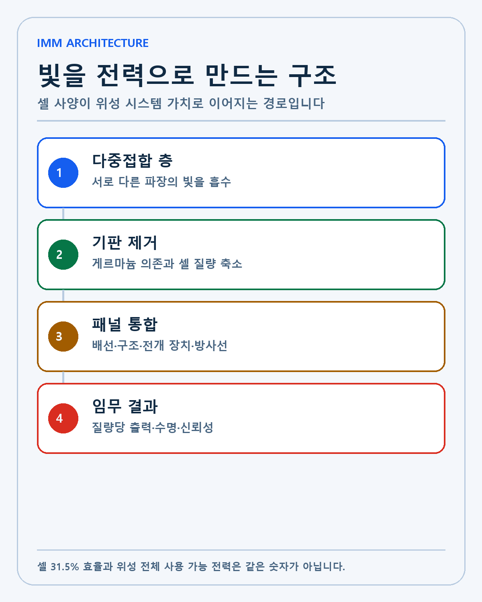
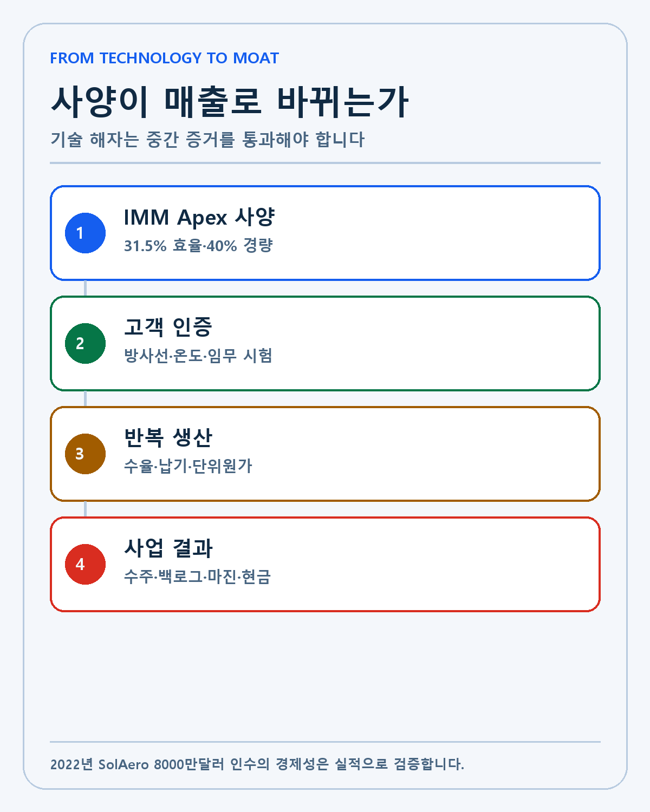
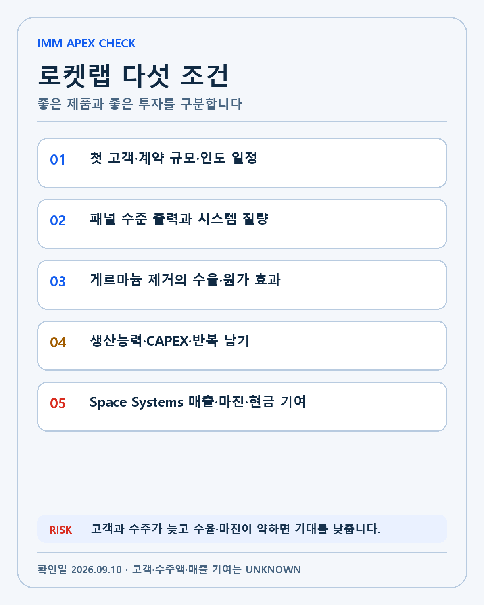

ROCKET LAB · DEEP RESEARCH
Rocket Lab IMM Apex 분석: 31.5% 효율과 40% 경량화가 Space Systems 해자가 되는가
Rocket Lab의 차세대 태양전지 IMM Apex를 31.5% 효율·40% 경량화·게르마늄 제거와 고객·수주·마진의 조건으로 분석합니다.

로켓랩이 9월 8일 차세대 우주용 태양전지 IMM Apex의 생산 출시를 발표했습니다. Rocket Lab 공식 발표에 따르면 초기 수명 기준 변환효율은 31.5%, 셀 질량은 이전 제품보다 40% 낮습니다. 기존 다중접합 태양전지에 사용되던 게르마늄 기판도 제거했습니다.
로켓랩을 발사 기업으로만 보면 이 뉴스가 작아 보일 수 있습니다. 회사는 Electron과 Neutron뿐 아니라 위성 본체, 반응휠, 스타트래커, 태양전지와 패널, 비행 소프트웨어를 만드는 Space Systems 사업을 운영합니다. 태양전지는 위성이 궤도에서 전력을 얻는 핵심 부품입니다.
저는 로켓랩을 보유하고 있습니다. 이번 발표를 바로 대형 수주나 매출 증가로 바꾸어 해석하지 않겠습니다. 고객명과 주문액, 생산능력, 매출 인식 시점과 마진은 공개되지 않았습니다. 제품 사양이 기술 해자가 되려면 고객 검증과 반복 생산, 현금흐름으로 이어져야 합니다.
확인된 숫자는 효율 31.5%와 질량 40% 감소입니다
IMM Apex의 31.5%는 Beginning of Life, 즉 우주 임무를 시작할 때의 변환효율입니다. 우주에서는 방사선과 온도 변화가 성능을 떨어뜨릴 수 있습니다. 초기 효율만큼 방사선 저항성과 수명 뒤 출력 유지가 중요합니다.
셀 질량 40% 감소는 발사 질량과 연결됩니다. 위성의 무게가 줄면 같은 로켓에 더 많은 탑재체를 넣거나 추진제·통신 장비·센서에 질량을 배분할 수 있습니다. 태양전지 자체가 가벼워도 패널 구조와 전개 장치까지 포함한 시스템 질량이 얼마나 줄어드는지는 별도로 확인해야 합니다.
| 항목 | IMM Apex 발표 | 투자자가 확인할 경계 |
|---|---|---|
| 초기 변환효율 | 31.5% | 궤도 수명 뒤 출력 유지 |
| 셀 질량 | 이전 대비 -40% | 패널·전개장치 포함 시스템 질량 |
| 기판 | 게르마늄 미사용 | 수율·재료비·대량생산 |
| 공개 상태 | 생산 출시 | 고객·수주액·매출은 UNKNOWN |

IMM 구조는 기판을 떼어내는 방식입니다
IMM은 Inverted Metamorphic Multijunction의 약자입니다. 여러 반도체 층이 서로 다른 파장의 빛을 흡수하도록 쌓고, 성장에 사용한 기판을 마지막에 제거할 수 있습니다. 미국 NREL의 IMM 설명은 이 구조가 기판 제거와 재사용에 호환되고 가볍고 유연한 태양전지에 유리하다고 설명합니다.
우주용 태양전지는 지상용 패널과 조건이 다릅니다. 면적당 효율뿐 아니라 질량당 출력, 방사선 저항성, 고온과 저온의 반복, 진동과 진공 환경을 견뎌야 합니다. 높은 효율이 같다면 더 가벼운 셀이 위성 설계의 선택지를 늘립니다.
NREL은 다른 IMM 연구에서 우주 초기수명 기준 34.2% 효율을 기록한 바 있습니다. 이를 IMM Apex와 단순 비교해서 누가 더 좋다고 말할 수는 없습니다. 연구용 셀과 양산 제품은 면적, 접합 구조, 시험 조건, 수율과 비용이 다릅니다. 로켓랩이 내세운 가치는 최고 숫자 하나보다 상업 생산과 특정 출력의 조합입니다.

게르마늄 제거는 공급망과 원가의 문제입니다
기존 고성능 다중접합 우주 태양전지는 게르마늄 기판을 널리 사용했습니다. 로켓랩은 게르마늄 비용과 공급 제약이 커지는 상황에서 IMM Apex가 이 재료에 의존하지 않는다고 밝혔습니다.
게르마늄을 제거했다고 원가가 자동으로 낮아지는 것은 아닙니다. III-V 반도체 층을 정밀하게 성장시키고 기판을 제거하며 큰 면적에서 수율을 유지하는 공정은 어렵습니다. 재료비 절감이 공정 비용과 불량률을 넘어야 실제 마진이 좋아집니다.
공급망 독립의 가치는 납기에서도 나옵니다. 특정 광물 가격이 오르거나 수출 통제가 생길 때 생산 일정이 흔들리지 않는다면 고객에게 안정적인 공급을 약속할 수 있습니다. 다만 로켓랩은 이번 발표에서 생산량과 고객 인도 일정을 공개하지 않았습니다. 공급망 해자는 실제 납기와 수율로 확인해야 합니다.
8000만달러 SolAero 인수의 결과물입니다
로켓랩은 2022년 1월 SolAero를 현금 8000만달러에 인수했습니다. SEC에 제출된 8-K에 따르면 인수는 1월 18일 완료됐습니다. 당시 회사는 고효율 우주 태양전지 생산을 발사·위성·부품과 묶는 수직 통합을 강조했습니다.
IMM Apex는 인수 발표 뒤 4년 넘게 이어진 기술·생산 투자의 결과입니다. 인수한 회사를 유지하는 수준을 넘어 새 제품을 양산 단계로 옮겼다는 점은 긍정적입니다. 그러나 기술 발표만으로 인수 수익률을 계산할 수는 없습니다.
인수의 경제성은 SolAero 사업의 매출과 총마진, 설비 가동률, 로켓랩 내부 위성과 외부 고객의 구매 비중으로 봐야 합니다. 내부 거래가 늘면 전체 임무 원가를 낮출 수 있지만 외부 매출과 마진이 어떻게 인식되는지도 구분해야 합니다.

현재 기준선은 매출 2억3400만달러와 백로그 23억6000만달러입니다
Rocket Lab Q2 2026 실적에 따르면 분기 매출은 2억3400만달러로 전년보다 62% 증가했습니다. 백로그는 23억6000만달러로 137% 늘었습니다.
이 숫자는 회사 전체 기준입니다. IMM Apex가 얼마를 기여했는지는 공개되지 않았습니다. Space Systems의 위성 플랫폼과 부품, 인수 사업이 함께 포함되기 때문에 태양전지 제품 하나의 매출을 역산하면 안 됩니다.
백로그 중 Space Systems와 Launch의 비중, 12개월 안에 인식될 금액도 중요합니다. 태양전지 수주가 새로 들어오면 고객과 계약 기간, 매출 인식 방식이 확인돼야 합니다. 제품 발표가 백로그로 바뀌는 첫 증거는 주문입니다.
IMM Apex에서 확인할 다섯 조건입니다
- 첫 외부 고객과 계약 규모, 위성 수와 인도 일정을 확인합니다.
- 셀 31.5% 효율이 패널 수준의 출력과 질량에서도 유지되는지 봅니다.
- 게르마늄 제거가 재료비·납기·수율과 총마진을 실제로 개선하는지 확인합니다.
- 생산능력과 설비투자, 대량 주문을 처리할 반복 생산 속도를 봅니다.
- Space Systems 매출·백로그와 현금흐름에 기여하는 시점을 기록합니다.

강세 시나리오는 IMM Apex가 정부와 상업 위성의 반복 수주를 받고, 패널 수준에서도 질량당 출력 우위를 입증하는 경우입니다. 게르마늄 공급 제약을 피하면서 수율과 납기를 지키면 기술과 공급망 해자가 함께 강해집니다.
기준 시나리오는 제품 성능은 인정받지만 고객 인증과 생산 확대에 시간이 필요한 경우입니다. 우주 부품은 임무 실패 비용이 크기 때문에 검증 기간이 길 수 있습니다. 저는 초기 주문이 작더라도 반복성과 마진을 확인하겠습니다.
약세 시나리오는 셀 사양이 패널 시스템에서 희석되거나 대량생산 수율이 낮아 원가가 높아지는 경우입니다. 고객 공개와 수주가 늦어지고 Space Systems 마진이 개선되지 않는다면 기술 발표와 사업 성과 사이의 간격이 커집니다.
제 보유 논리는 발사보다 넓습니다
로켓랩을 보유하는 이유는 Electron 발사 횟수 하나가 아닙니다. 위성을 만들고 전력을 공급하며 통신과 자세제어 부품을 제공하고, 필요하면 자체 발사체로 궤도에 올리는 수직 통합을 봅니다. IMM Apex는 그 구조에서 태양광을 위성의 전력으로 바꾸는 층입니다.
제품이 좋아도 모든 부품을 내부에서 만드는 것이 항상 효율적인 것은 아닙니다. 수직 통합은 핵심 부품의 공급과 일정을 통제할 때 가치가 있습니다. 내부 조직이 외부 전문업체보다 비용이 높거나 혁신이 느리면 오히려 부담이 됩니다. 외부 고객이 계속 선택하는지가 경쟁력의 시험입니다.
저의 기업 평가 순서는 기술, 해자, 창업자, 성장률, 현금흐름입니다. IMM Apex는 기술과 해자 후보를 보여 줬습니다. 다음 단계는 고객과 성장률, 마진과 현금흐름입니다. Peter Beck의 수직 통합 전략이 실제 사업 가치로 이어지는지 같은 순서로 보겠습니다.
다음 공시에서 숫자를 다시 확인하겠습니다
제품 발표 뒤에는 고객 계약을 먼저 봅니다. 이후 분기 실적에서 Space Systems 매출과 총마진, 백로그를 기록합니다. 설비투자와 재고가 늘었다면 주문에 앞선 생산 확대인지, 판매가 늦어지는 재고인지 구분해야 합니다.
IMM Apex가 Rocket Lab 자체 위성에 쓰이면 외부 매출보다 임무 원가와 일정에 효과가 나타날 수 있습니다. 외부 고객에게 팔리면 부품 매출과 마진으로 확인됩니다. 두 경로를 같은 수주액처럼 합치지 않겠습니다.
이번 발표에서 확인된 것은 생산 출시, 31.5% 초기 효율, 40% 낮은 셀 질량과 게르마늄 미사용입니다. 고객명과 수주액, 생산량, 매출 기여와 마진은 UNKNOWN입니다. 좋은 기술 발표를 좋은 사업으로 인정하려면 그 사이의 증거가 더 필요합니다.
셀 효율과 시스템 효율은 다릅니다
태양전지 셀은 빛을 전기로 바꾸는 가장 작은 단위입니다. 여러 셀을 연결해 패널을 만들고, 패널에는 배선과 구조체, 전개 장치와 제어 장치가 붙습니다. 셀에서 얻은 31.5% 효율이 위성 전체의 사용 가능한 전력과 같은 숫자는 아닙니다.
패널 면적과 질량, 배선 손실, 온도와 태양 입사각이 실제 출력에 영향을 줍니다. 우주 방사선은 시간이 지날수록 성능을 낮출 수 있습니다. Beginning of Life 효율과 End of Life 출력 유지율을 함께 봐야 장기 임무의 경제성을 판단할 수 있습니다.
40% 낮은 셀 질량도 시스템 수준에서 다시 계산해야 합니다. 셀이 가벼워져도 지지 구조와 전개 장치가 그대로라면 전체 패널의 질량 감소율은 더 작을 수 있습니다. 로켓랩이 고객에게 제공하는 패널 사양과 와트당·킬로그램당 가격을 확인해야 합니다.
수직 통합이 만드는 두 가지 매출 경로입니다
첫 번째 경로는 외부 부품 판매입니다. 정부와 상업 위성 제작사에 셀이나 패널을 공급하면 Space Systems 매출과 백로그로 잡힙니다. 고객 인증과 반복 주문, 계약 기간과 마진이 공개되면 IMM Apex의 독립적인 사업 가치를 확인할 수 있습니다.
두 번째 경로는 내부 원가와 일정입니다. Rocket Lab이 자체 제작하는 위성이나 향후 통신망에 IMM Apex를 쓰면 외부 매출은 생기지 않을 수 있습니다. 대신 공급업체 의존과 납기를 줄이고 임무 설계의 질량과 전력 예산을 개선할 수 있습니다.
두 경로를 합쳐 이중으로 계산하면 안 됩니다. 내부 사용은 전체 임무 비용과 일정에서, 외부 판매는 계약 매출과 마진에서 확인합니다. 장기적으로 외부 고객이 경쟁사 대신 Rocket Lab을 선택해야 부품 해자가 독립적으로 증명됩니다.
상업 생산의 병목을 확인합니다
고효율 III-V 태양전지는 층 성장과 박막 분리, 셀 가공과 시험이 필요합니다. 큰 면적에서 결함률을 낮추고 동일한 성능을 반복해야 합니다. 연구실 최고 효율보다 생산 수율과 처리량이 사업 성과를 결정합니다.
기판을 제거하거나 재사용하는 공정이 재료비를 낮출 수 있지만 장비와 공정 시간이 늘 수 있습니다. 게르마늄을 쓰지 않는 장점이 실제 단위원가와 납기로 이어지는지 확인할 이유입니다. 공급망 위험 하나를 줄이면서 새로운 제조 병목이 생길 수도 있습니다.
우주 부품은 고객 자격시험과 임무 인증이 길 수 있습니다. 첫 계약이 발표돼도 모든 매출이 즉시 인식되지 않습니다. 생산과 인도, 고객 검수와 발사 일정에 따라 여러 분기로 나뉠 수 있습니다.
매출 전환 기록표입니다
| 단계 | 확인할 증거 | 긍정 신호 | 무효화 위험 |
|---|---|---|---|
| 제품 | 31.5%·40% 경량·게르마늄 미사용 | 독립 시험과 패널 사양 | 셀과 시스템 성능 차이 |
| 고객 인증 | 첫 고객·임무·수량 | 정부·상업 고객 반복 | 인증 지연·시험 실패 |
| 생산 | 수율·처리량·CAPEX | 납기 단축·단위원가 하락 | 불량·설비비 증가 |
| 수주 | 계약 금액·기간 | Space Systems 백로그 증가 | 소규모 시험 주문에 머묾 |
| 실적 | 매출·총마진·현금흐름 | 외부 매출과 내부 절감 동시 확인 | 성장 없는 재고·현금 소진 |
이 표의 빈칸은 아직 공개되지 않은 정보입니다. 회사가 제품 사양을 발표했다는 이유로 고객과 수주를 임의로 채우지 않습니다. 다음 공시가 나올 때마다 같은 단계에 증거를 추가하겠습니다.
경쟁력의 반대 논리도 봅니다
우주 태양전지 시장에는 오랜 비행 이력과 고객 관계를 가진 경쟁사가 있습니다. 고객은 최고 효율만으로 공급사를 바꾸지 않습니다. 임무 신뢰성, 납기, 가격, 보험과 규제, 장기간 지원이 함께 필요합니다.
대형 위성 사업자는 자체 설계나 다른 공급사를 병행할 수 있습니다. Rocket Lab의 수직 통합이 고객에게 공급사 종속으로 보일 가능성도 있습니다. 외부 위성 제작사와 경쟁하는 회사에서 부품을 사는 데 전략적 부담이 생길 수 있기 때문입니다.
기술 세대가 빨리 바뀌면 현재 설비의 회수 기간도 길어질 수 있습니다. IMM Apex가 여러 해 동안 경쟁력을 유지하려면 후속 로드맵과 생산 유연성이 필요합니다.
다음 분기 실적에서 볼 숫자입니다
Space Systems 매출과 총마진을 먼저 봅니다. 백로그 중 부품 계약이 얼마나 늘었는지, 12개월 안에 인식될 비중이 어떻게 바뀌는지도 확인합니다. 재고와 자본지출이 증가했다면 주문을 위한 선행 투자라는 증거가 있는지 찾습니다.
현금흐름도 중요합니다. 로켓랩은 Neutron과 인수 통합, 위성 시스템에 동시에 투자합니다. 태양전지 사업이 반복 매출과 마진을 만들면 전체 투자 부담을 완화할 수 있습니다. 반대로 제품이 많아지는데 현금 전환이 느리면 수직 통합의 복잡성이 커집니다.
저는 IMM Apex를 로켓랩의 완성된 해자라고 부르지 않습니다. 기술 사양은 첫 단계입니다. 고객 인증, 생산 수율, 반복 수주와 현금흐름이 이어질 때 해자로 인정하겠습니다.
좋은 제품과 좋은 투자를 구분하겠습니다
31.5% 효율과 40% 경량화는 제품의 경쟁력을 설명합니다. 이 숫자만으로 로켓랩 주식의 적정가치를 계산할 수는 없습니다. 판매가격과 고객 수, 생산원가, 계약 기간과 필요한 자본이 공개돼야 사업 가치를 추정할 수 있습니다.
제품 출시 뒤 주가가 움직여도 IMM Apex만의 영향이라고 단정하지 않겠습니다. 로켓랩에는 Electron 발사, Neutron 개발, Iridium 인수와 정부 계약처럼 동시에 움직이는 변수가 많습니다. 시장 전체 금리와 우주주 수급도 같은 날 가격에 영향을 줄 수 있습니다.
보유자인 저는 좋은 기술 발표를 반갑게 보지만 확인 기준을 낮추지 않겠습니다. 첫 고객과 반복 주문, 패널 성능, 수율과 총마진이 이어지면 투자 논리가 강해집니다. 제품 발표만 반복되고 계약과 현금흐름이 보이지 않으면 기대의 속도를 낮추겠습니다.
IMM Apex는 로켓랩이 발사체 회사에서 우주 인프라 기업으로 넓어지는 한 조각입니다. 조각이 실제 해자가 되는지는 외부 고객이 선택하고 회사가 안정적으로 생산하며 주주가치에 남는 현금을 만들 때 확인됩니다.
이 글은 개인 투자 기록이며 특정 종목의 매수·매도를 권유하지 않습니다. 제품 성능과 회사 전망은 실제 고객 검증·생산·재무 결과와 다를 수 있습니다. 모든 투자 판단과 책임은 투자자 본인에게 있습니다.
작성 방법
2026년 9월 10일 기준 공식 자료와 공시를 우선하고 실제·회사 전망·시나리오·UNKNOWN을 분리했습니다.
개인 투자 기록이며 특정 종목의 매수·매도를 권유하지 않습니다.